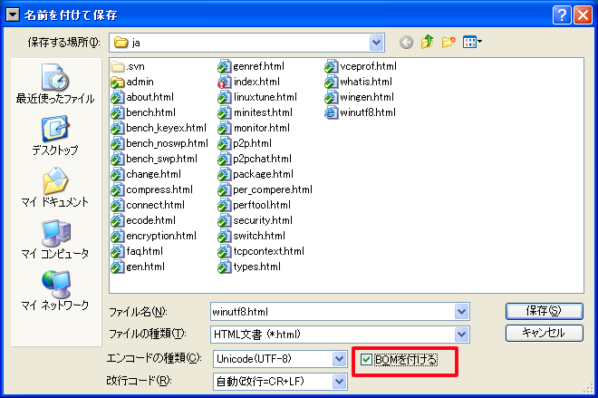

Visual StudioではUTF8の処理に問題があり、日本語を用いたソースファイルでは、 ビルドに失敗してしまう状況があります。ここではいくつかの例と対策例を紹介していきます。 現時点では文字コードの解析をしていないので、どのコードが良くないのかははっきりしていません。
/* コメントの終わり。*/ ←コメントが突き抜ける
a = 10; ←コメント中とみなされる
/* コメントその２ */ ←ここでコメント終了が認識される。
代入式はコメントとして処理され無視されるようです。
対応策としては、読点とコメント終了の間にスペースなどをいれて調整してください。
/* コメントの終わり。 */ ←空白を入れて対処
a = 10; ←実行される
/* コメントその２ */ ←コメントとして処理される
VisualStudioではUTF8を正しく認識させるためにBOMをつけるようにしてください。以下は秀丸エディタの保存方法です。赤く囲った部分がBOMを追加するところです。エディタのにより設定できない場合もあります。設定できるエディタを利用しましょう。
